ΕΚΘΕΣΗ: ΜΥΘΟΙ ΤΟΥ ΑΙΣΩΠΟΥ
Ο Νώντας Ρεντζής, ως γνήσιος λαϊκός ζωγράφος, μπόρεσε να αξιοποιήσει παραδοσιακές μορφές και δράσεις μέσα στη σύγχρονη κοινωνική ερημιά. Ο γνήσιος αυθορμητισμός της ζωγραφικής του θα μπορούσε να παρασύρει τους ανήλικους που διατηρούν ακόμη σε ένα σημαντικό βαθμό τη σύνδεση με την μαγεία και να τους μεταφέρει στον κόσμο του Αισώπου, όπου και τα ζώα έχουν φωνή και μιλούν.
Αντιμετώπισε τον Αίσωπο ως έναν διαχρονικό αφηγητή που συνεχίζει να μας διδάσκει. Ο τρόπος με τον οποίο μορφοποίησε τις ιστορίες του Αισώπου, τα όντα του ζωικού βασιλείου και οι συμπεριφορές τους, μας επιτρέπει να διατυπώσουμε χωρίς δισταγμό τη γνώμη πως στάθηκε πράγματι ορθός δίπλα στον Αίσωπο.
Κάθε ζώο φέρει σταθερά συμβολικά χαρακτηριστικά, τα οποία επαναλαμβάνονται από αφήγηση σε αφήγηση. Η αλεπού συμβολίζει την στρατηγική πονηριά, το λιοντάρι την εξουσία, ο λύκος την απληστία, η χελώνα την υπομονή και ανθεκτικότητα κ.τ.λ Η σταθερότητα αυτή είναι καθοριστική επειδή επιτρέπει στο παιδί να προβλέπει τις συνέπειες και να εντάξει την ηθική σκέψη στην κρίση του.
Οι μύθοι του Αισώπου διαχρονικοί και ζωντανοί παραμένουν μέχρι και τις μέρες μας αφορμή για προβληματισμό όχι μόνο για τα παιδιά αλλά και τους μεγάλους.
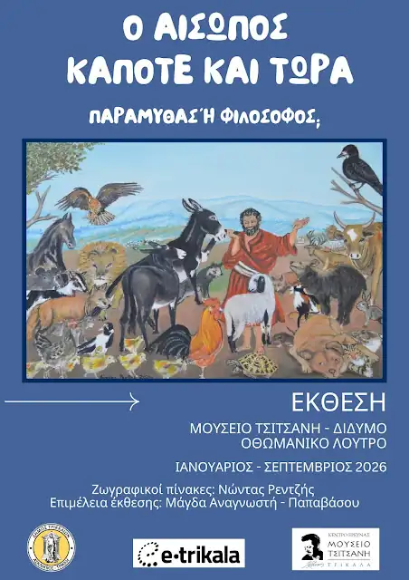

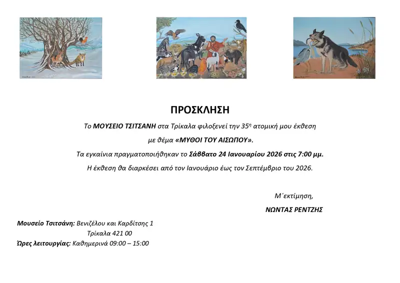
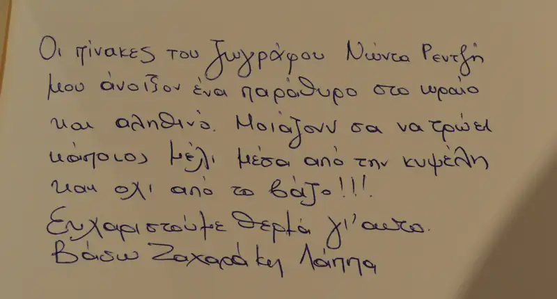
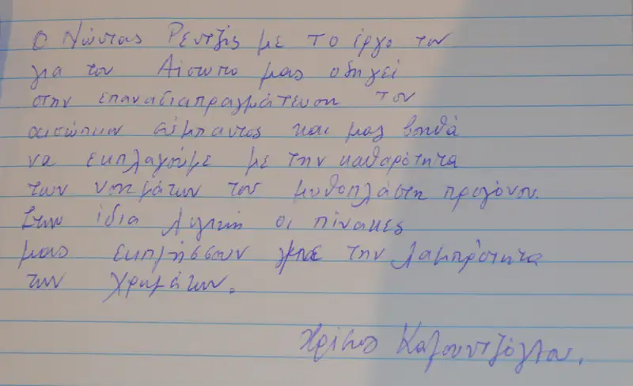
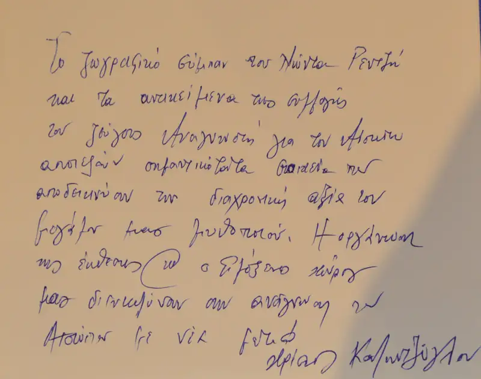
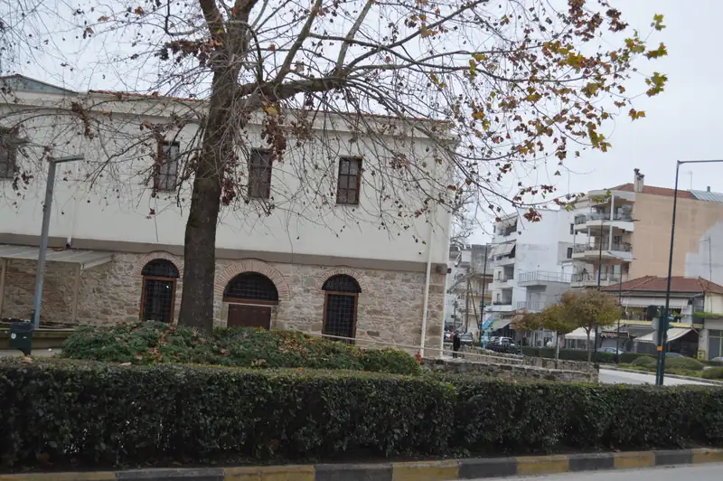
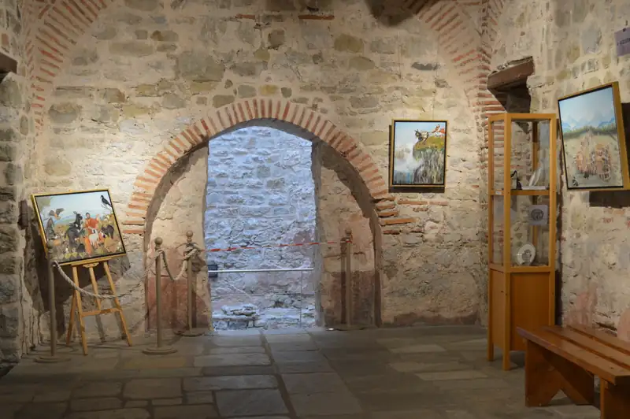
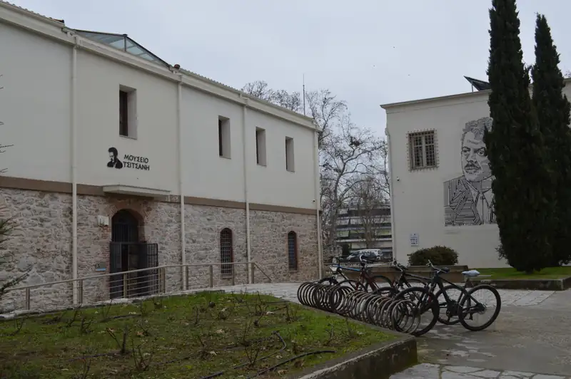
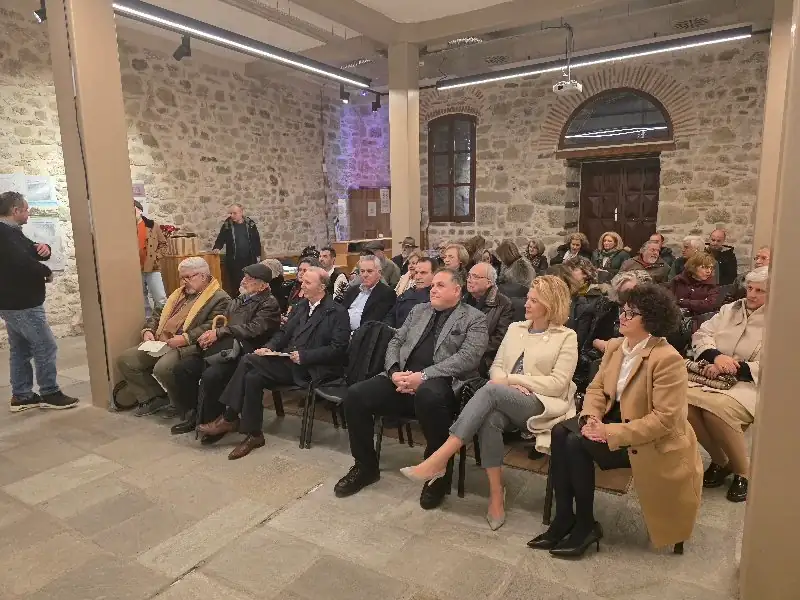
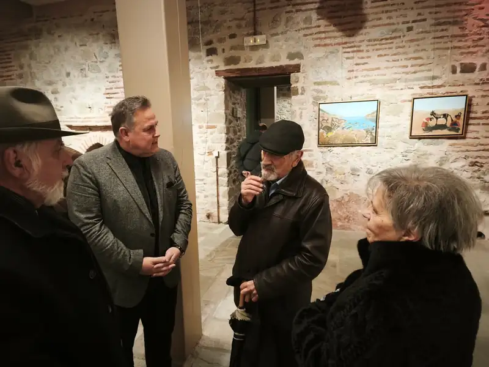
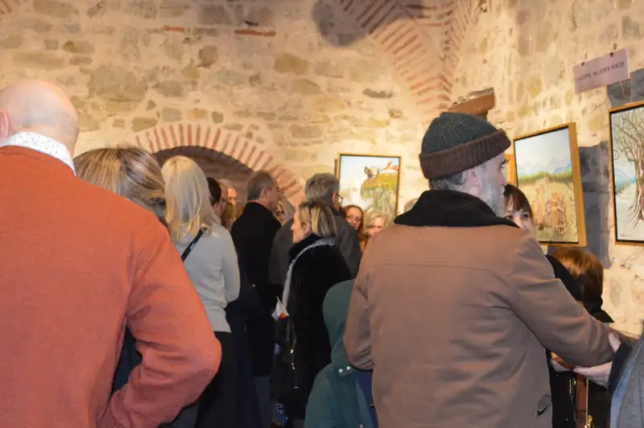
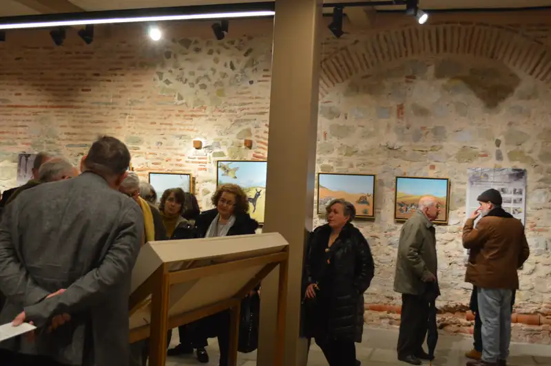
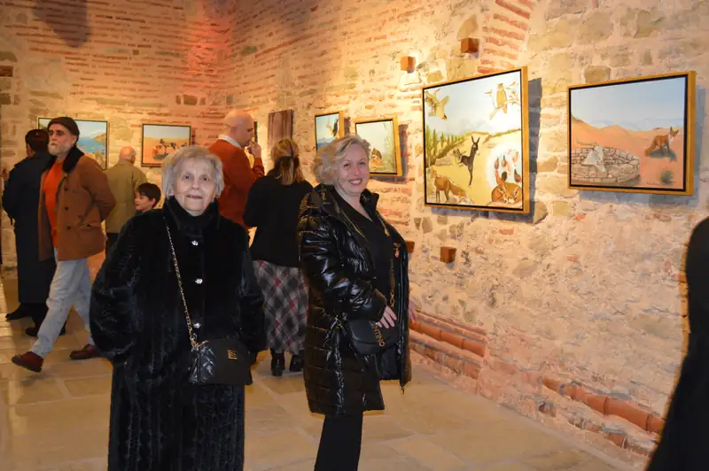
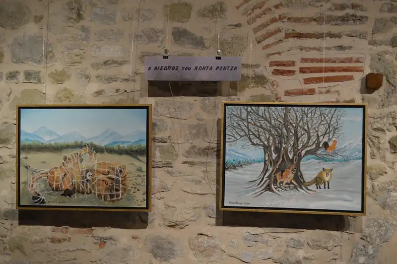